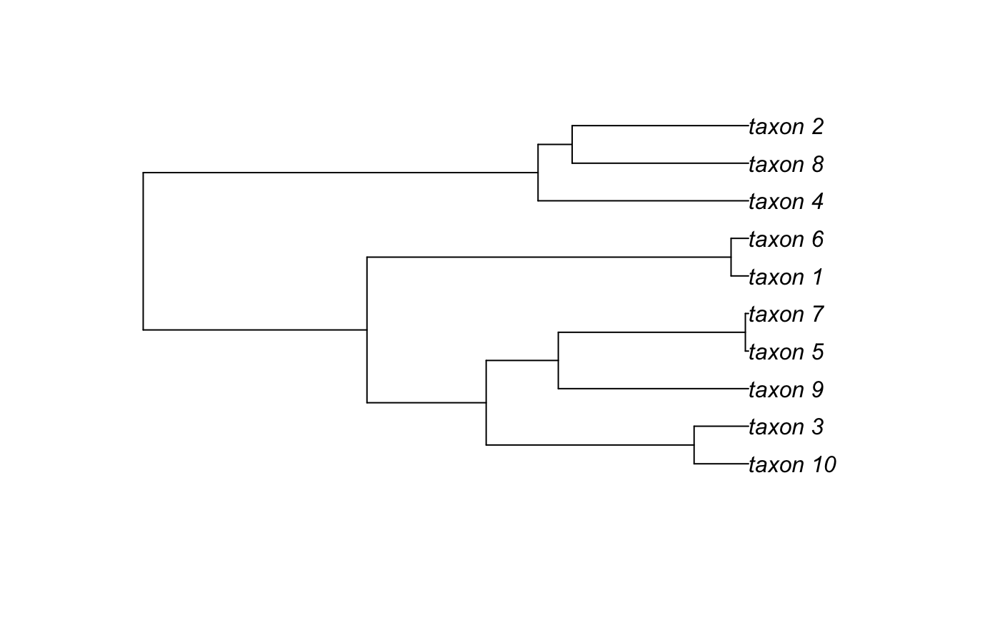

vignettes/intro.Rmd
intro.Rmd## Loading required package: apeRead in a nexml file into the ape::phylo format:
f <- system.file("examples", "comp_analysis.xml", package="RNeXML")
nexml <- nexml_read(f)
tr <- get_trees(nexml) # or: as(nexml, "phylo")
plot(tr)
Write an ape::phylo tree into the nexml format:
## [1] "test.xml"A key feature of NeXML is the ability to formally validate the construction of the data file against the standard (the lack of such a feature in nexus files had lead to inconsistencies across different software platforms, and some files that cannot be read at all). While it is difficult to make an invalid NeXML file from RNeXML, it never hurts to validate just to be sure:
## [1] TRUEExtract metadata from the NeXML file:
## otu label xsi.type otus
## 1 ou1 Struthioniformes NA os1
## 2 ou2 Tinamiformes NA os1
## 3 ou3 Craciformes NA os1
## 4 ou4 Galliformes NA os1
## 5 ou5 Anseriformes NA os1
## 6 ou6 Turniciformes NA os1
## 7 ou7 Piciformes NA os1
## 8 ou8 Galbuliformes NA os1
## 9 ou9 Bucerotiformes NA os1
## 10 ou10 Upupiformes NA os1
## 11 ou11 Trogoniformes NA os1
## 12 ou12 Coraciiformes NA os1
## 13 ou13 Coliiformes NA os1
## 14 ou14 Cuculiformes NA os1
## 15 ou15 Psittaciformes NA os1
## 16 ou16 Apodiformes NA os1
## 17 ou17 Trochiliformes NA os1
## 18 ou18 Musophagiformes NA os1
## 19 ou19 Strigiformes NA os1
## 20 ou20 Columbiformes NA os1
## 21 ou21 Gruiformes NA os1
## 22 ou22 Ciconiiformes NA os1
## 23 ou23 Passeriformes NA os1## property datatype content xsi.type
## 1 dc:creator xsd:string cboettig LiteralMeta
## 2 dcterms:modified xsd:string 2018-11-30 18:08:48 GMT LiteralMeta
## 3 cc:license <NA> <NA> ResourceMeta
## href Meta
## 1 <NA> m1
## 2 <NA> m2
## 3 http://creativecommons.org/publicdomain/zero/1.0/ m3Add basic additional metadata:
nexml_write(bird.orders, file="meta_example.xml",
title = "My test title",
description = "A description of my test",
creator = "Carl Boettiger <cboettig@gmail.com>",
publisher = "unpublished data",
pubdate = "2012-04-01")## [1] "meta_example.xml"By default, RNeXML adds certain metadata, including the NCBI taxon id numbers for all named taxa. This acts a check on the spelling and definitions of the taxa as well as providing a link to additional metadata about each taxonomic unit described in the dataset.
We can also add arbitrary metadata to a NeXML tree by define meta objects:
Advanced use requires specifying the namespace used. Metadata follows the RDFa conventions. Here we indicate the modification date using the prism vocabulary. This namespace is included by default, as it is used for some of the basic metadata shown in the previous example. We can see from this list:
## nex
## "http://www.nexml.org/2009"
## xsi
## "http://www.w3.org/2001/XMLSchema-instance"
## xml
## "http://www.w3.org/XML/1998/namespace"
## cdao
## "http://purl.obolibrary.org/obo/"
## xsd
## "http://www.w3.org/2001/XMLSchema#"
## dc
## "http://purl.org/dc/elements/1.1/"
## dcterms
## "http://purl.org/dc/terms/"
## ter
## "http://purl.org/dc/terms/"
## prism
## "http://prismstandard.org/namespaces/1.2/basic/"
## cc
## "http://creativecommons.org/ns#"
## ncbi
## "http://www.ncbi.nlm.nih.gov/taxonomy#"
## tc
## "http://rs.tdwg.org/ontology/voc/TaxonConcept#"This next block defines a resource (link), described by the rel attribute as a homepage, a term in the foaf vocabulalry. Becuase foaf is not a default namespace, we will have to provide its URL in the full definition below.
Here we create a history node using the skos namespace. We can also add id values to any metadata element to make the element easier to reference externally:
history <- meta(property = "skos:historyNote",
content = "Mapped from the bird.orders data in the ape package using RNeXML",
id = "meta123")For this kind of richer annotation, it is best to build up our NeXML object sequentially. Frist we will add bird.orders phylogeny to a new phylogenetic object, and then we will add the metadata elements created above to this object. Finally, we will write the object out as an XML file:
birds <- add_trees(bird.orders)
birds <- add_meta(meta = list(history, modified, website),
namespaces = c(skos = "http://www.w3.org/2004/02/skos/core#",
foaf = "http://xmlns.com/foaf/0.1/"),
nexml=birds)
nexml_write(birds,
file = "example.xml")## [1] "example.xml"NeXML also provides a standard exchange format for handling character data. The R platform is particularly popular in the context of phylogenetic comparative methods, which consider both a given phylogeny and a set of traits. NeXML provides an ideal tool for handling this metadata.
We can load the library, parse the NeXML file and extract both the characters and the phylogeny.
library(RNeXML)
nexml <- read.nexml(system.file("examples", "comp_analysis.xml", package="RNeXML"))
traits <- get_characters(nexml)
tree <- get_trees(nexml)(Note that get_characters would return both discrete and continuous characters together in the same data.frame, but we use get_characters_list to get separate data.frames for the continuous characters block and the discrete characters block).
We can then fire up geiger and fit, say, a Brownian motion model the continuous data and a Markov transition matrix to the discrete states:
## GEIGER-fitted comparative model of continuous data
## fitted 'BM' model parameters:
## sigsq = 1.166011
## z0 = 0.255591
##
## model summary:
## log-likelihood = -20.501183
## AIC = 45.002367
## AICc = 46.716652
## free parameters = 2
##
## Convergence diagnostics:
## optimization iterations = 100
## failed iterations = 0
## frequency of best fit = 1.00
##
## object summary:
## 'lik' -- likelihood function
## 'bnd' -- bounds for likelihood search
## 'res' -- optimization iteration summary
## 'opt' -- maximum likelihood parameter estimates## GEIGER-fitted comparative model of discrete data
## fitted Q matrix:
## 0 1
## 0 -0.07308302 0.07308302
## 1 0.07308302 -0.07308302
##
## model summary:
## log-likelihood = -4.574133
## AIC = 11.148266
## AICc = 11.648266
## free parameters = 1
##
## Convergence diagnostics:
## optimization iterations = 100
## failed iterations = 0
## frequency of best fit = 1.00
##
## object summary:
## 'lik' -- likelihood function
## 'bnd' -- bounds for likelihood search
## 'res' -- optimization iteration summary
## 'opt' -- maximum likelihood parameter estimates